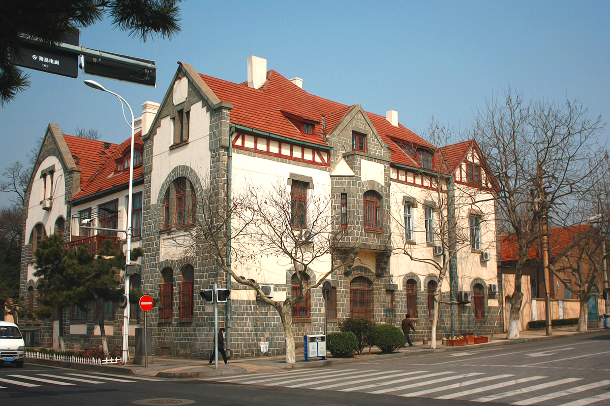
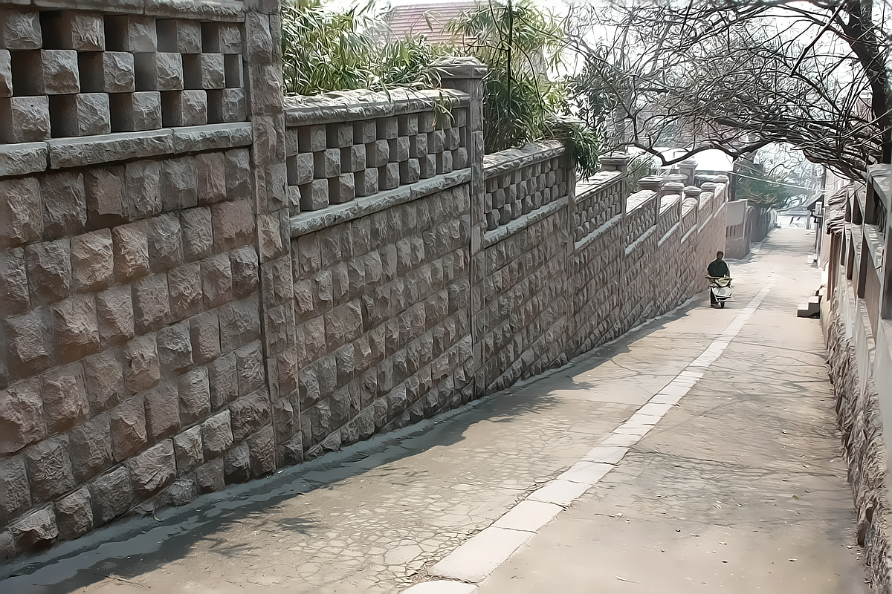
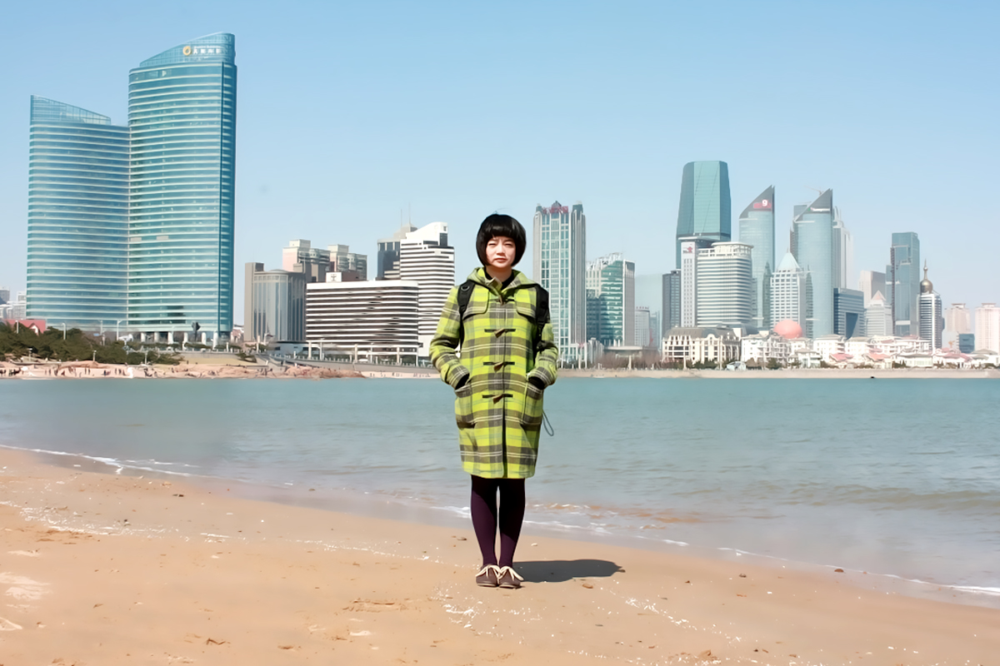
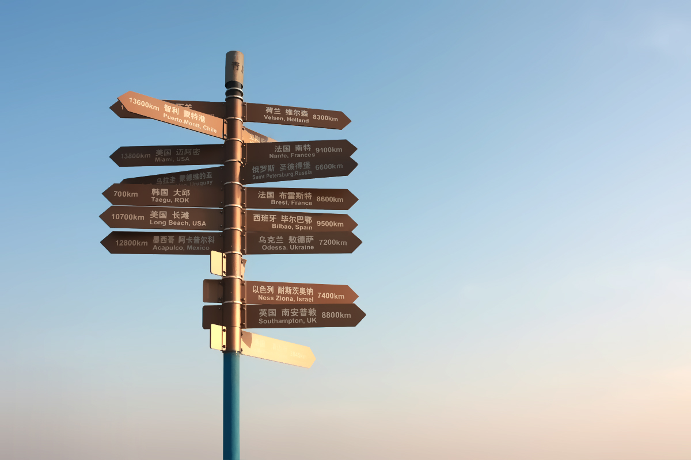

 青岛第二天，出太阳了。从天后宫开始一天的暴走。太平路，莱西路，金口一路，二路，三路，鱼山路，第一海水浴场，八大关，第二海水浴场，太平角，湛山四路，第三海水浴场，东海西路，香港西路，香港中路，山东路，五四广场，澳门路，奥帆中心，心海广场，大剧场，灯塔，新会路，香港中路。在地图上量了一下，全程接近20公里。 八大关很幽静，每一处的斜坡和拐角衬上身后的别墅洋楼，都很有诗意。再加上郁郁葱葱的树木，吸引了无数对拍婚纱照的情侣。据说叶倩文、林子祥的《选择》和《重逢》的MV就是在八大关拍的外景。可惜因为季节关系，我们去的时侯爬山虎都还没绿，黑黑的贴在小洋楼的外墙上，街道虽然干净，可惜每条路上都有车停在路边，感觉有些大煞风景。如果这里全改成步行街应该会更好。相比而言，我反而更喜欢没什么游人的金口路，那是纵横交错的几条坡道上的小路，穿过去就到了小鱼山公园。每走几步，就有一条很陡的窄路下去到达海边，这里没有八大关那般气派，不像八大关的每一栋别墅门口都写着类似“闲人勿进”的牌子，跟每一个游客维持着有距离的神秘感，这里有老人踟蹰而过，有猫猫狗狗在门口慵懒地躺着，有着我更喜欢的市井和质朴的味道。  青岛的海岸线很长，蜿蜒起伏，沿着海边走，经常会有一转弯柳暗花明的感觉。这里的海边多礁石，沙滩不如南方海边感觉温柔，有一种北方独有的大气。我们在第二海水浴场附近，爬到礁石上坐了好一会，听海浪一遍遍拍打礁石，看远处小山一般的大货轮驶进青岛西边的港口。本来这次不是为海而来，但来到青岛还是会不由自主来到海边。第三海水浴场看对面的香港中路，很有点维多利亚港的感觉，只可惜阳光虽好，也有碧海，天却不够蓝，不知道是不是污染的关系。  本来以为香港西路开始会有很多大商场，结果一直走到山东路都游人稀少，路上也没什么歇脚吃饭的地儿。再往东才有个家乐福，不过这条路上满是高楼大厦，全是银行，证券，保险等金融机构，难怪没什么人逛街。  在奥帆中心第一次见到这么多帆船，可惜都没有扬帆，只是整整齐齐停泊在岸边，想当年奥运帆船比赛的时侯，那么多扬帆的帆船，一定很有气势吧。走到灯塔，又有好几对情侣在拍婚纱。差不多又是傍晚了，灯塔背后的天空有一轮月亮。在奥帆中心见到一种可以下水的海上巴士，叫冒险鸭，停在路中间，好长时间没人买票，后来看《晚秋》，才发现汤唯和玄彬在西雅图也坐过这种巴士。那个形状奇特的观光车又叫“鸭子船”，是个非常有来头的水陆两栖交通工具。二战时期，美国、德国等军方都曾经研发水陆两栖登陆艇进入军事使用。1944 年，盟军曾利用两栖登陆艇渡过英吉利海峡，成功实现了历史上著名的诺曼底登陆。 退役之后的部分两栖登陆艇经过改装被用于观光旅游。  晚上回到驻地附近，发现一家馄饨连锁叫小青青，15块一碗，量很大，都是海鲜馄饨，虽然吃得很饱，可惜汤应该不是号称的鸡汤，有些小小失望。
晚上回到驻地附近，发现一家馄饨连锁叫小青青，15块一碗，量很大，都是海鲜馄饨，虽然吃得很饱，可惜汤应该不是号称的鸡汤，有些小小失望。